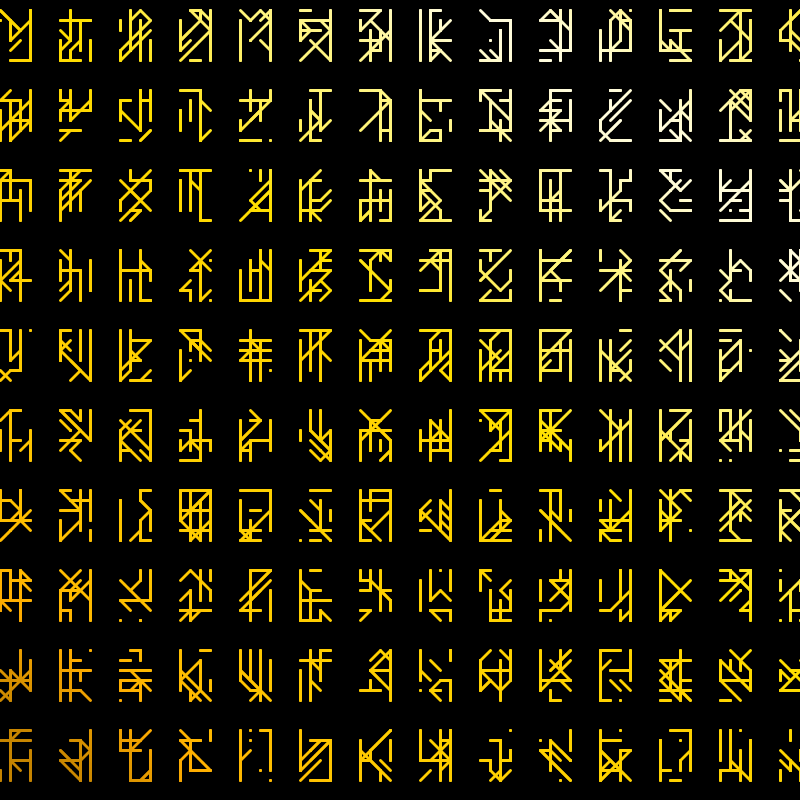

Runes

Overview
This program procedurally generates runes.
The runes are generated by creating a small grid of points and then randomly creating lines that connect those points. The only condition is that the lines must exist along one of a set of predetermined alignments. After the rune is generated it is tested to make sure that at least one line touches every edge of the grid. If this condition is met the rune is saved otherwise a new one is created until one that meets this condition is found.
Inspiration
This was inspired in part by this old reddit post but primarily by this shaddertoy demo.